Bohren an der Ständerbohrmaschine – sicher und genau – Lesespurgeschichte mit Rätselaufgaben (Klasse 7)

Der Jahresrückblick – eine Radiosendung entsteht – Lesespurgeschichte mit Rätselaufgaben (Klasse 7)
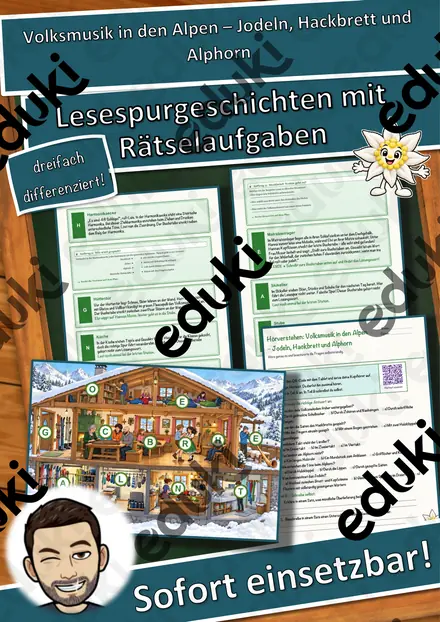
Volksmusik in den Alpen – Jodeln, Hackbrett und Alphorn – Lesespurgeschichte mit Rätselaufgaben (Klasse 7)

Merkmale einer Kurzgeschichte – Lesespurgeschichte mit Rätselaufgaben (Klasse 7)

Wichern und der Adventskranz – Hilfe für Kinder in Not – Lesespurgeschichte mit Rätselaufgaben (Klasse 7)

Metall formen – anreißen, sägen, feilen, biegen – Lesespurgeschichte mit Rätselaufgaben (Klasse 7)

Balladen – unheimliche Geschichten in Versen – Lesespurgeschichte mit Rätselaufgaben (Klasse 7)

Wenn’s ernst wird – Katastrophenschutz in Deutschland – Lesespurgeschichte mit Rätselaufgaben (Klasse 7)

Die Oper – Musik, die Geschichten erzählt – Lesespurgeschichte mit Rätselaufgaben (Klasse 7)
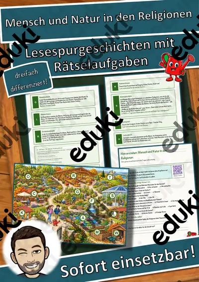
Mensch und Natur in den Religionen – Lesespurgeschichte mit Rätselaufgaben (Klasse 7)
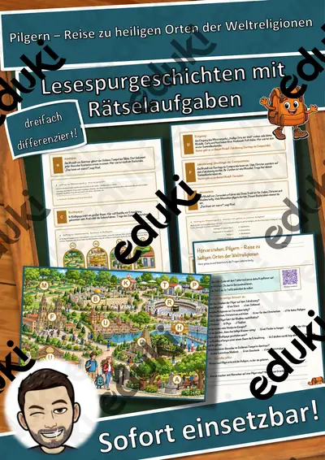
Pilgern – Reise zu heiligen Orten der Weltreligionen – Lesespurgeschichte mit Rätselaufgaben (Klasse 7)
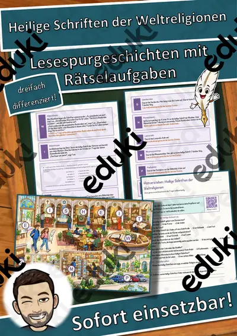
Heilige Schriften der Weltreligionen – Lesespurgeschichte mit Rätselaufgaben (Klasse 7)
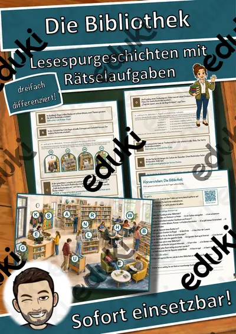
Die Bibliothek – Lesespurgeschichte mit Rätselaufgaben (Klasse 7)
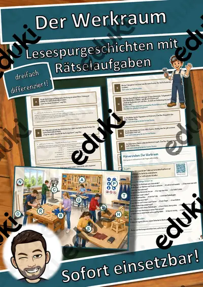
Der Werkraum – Lesespurgeschichte mit Rätselaufgaben (Klasse 7)
Pieter Bruegel Lückentext mit Wortspeicher Hörverstehen und Suchsel
Yves Klein Lückentext mit Wortspeicher Hörverstehen und Suchsel
Wassily Kandinsky Lückentext mit Wortspeicher Hörverstehen und Suchsel
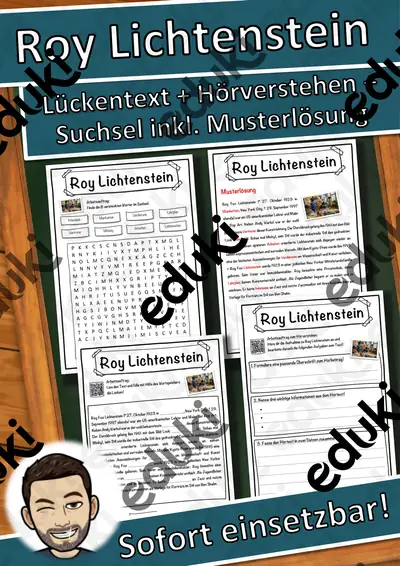
Roy Lichtenstein Lückentext mit Wortspeicher Hörverstehen und Suchsel
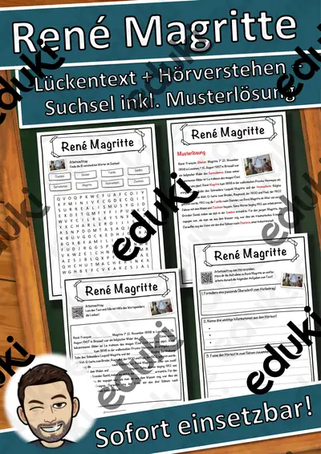
René Magritte Lückentext mit Wortspeicher Hörverstehen und Suchsel
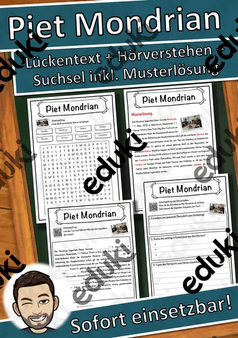
Piet Mondrian Lückentext mit Wortspeicher Hörverstehen und Suchsel
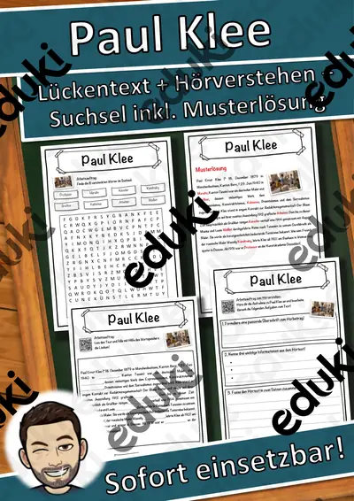
Paul Klee Lückentext mit Wortspeicher Hörverstehen und Suchsel
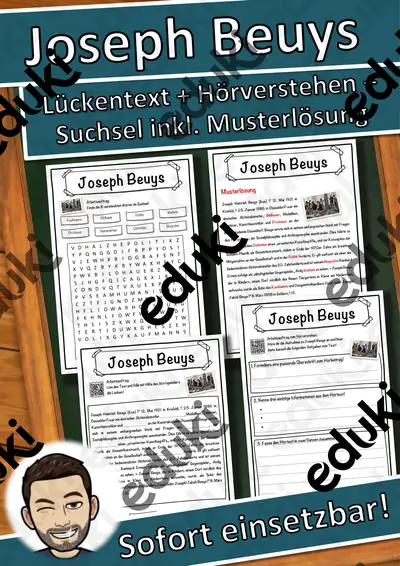
Joseph Beuys Lückentext mit Wortspeicher Hörverstehen und Suchsel
Henri Rousseau Lückentext mit Wortspeicher Hörverstehen und Suchsel
Günther Uecker Lückentext mit Wortspeicher Hörverstehen und Suchsel
Giuseppe Arcimboldo Lückentext mit Wortspeicher Hörverstehen und Suchsel
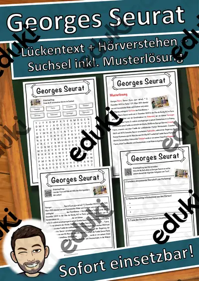
Georges Seurat Lückentext mit Wortspeicher Hörverstehen und Suchsel
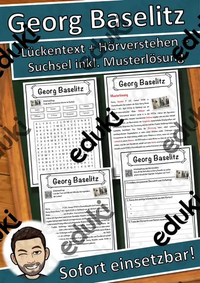
Georg Baselitz Lückentext mit Wortspeicher Hörverstehen und Suchsel
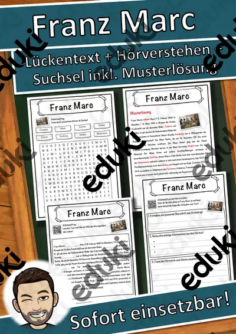
Franz Marc Lückentext mit Wortspeicher Hörverstehen und Suchsel

Sachkunde Lückentext mit Wortspeicher Hörverstehen und Suchsel

Adel Lückentext mit Wortspeicher Hörverstehen und Suchsel

Materialpaket - Papstwahl - Papstwechsel

Papstwechsel - Annahme und Namenswahl

Papstwechsel - Wahl des neuen Papstes

Papstwechsel - Vorbereitung und Beginn des Konklaves

Papstwechsel - Sedisvakanz – Zeit ohne Papst

Materialpaket - Internationale Tage im April

04-26 Welttag des geistigen Eigentums

04-21 Welttag der Kreativität und Innovation

04-20 Tag der chinesischen Sprache

04-07 Weltgesundheitstag

04-05 Internationaler Tag des Gewissens
Materialpaket - Internationale Tage im März

03-22 Weltwassertag

03-21 Welttag der Poesie

03-21 Welttag der Gletscher

03-21 Internationaler Nouruz-Tag

03-20 Internationaler Tag des Glücks

03-05 Internationaler Tag der Abrüstung und der Förderung des Bewusstseins für Nichtverbreitung
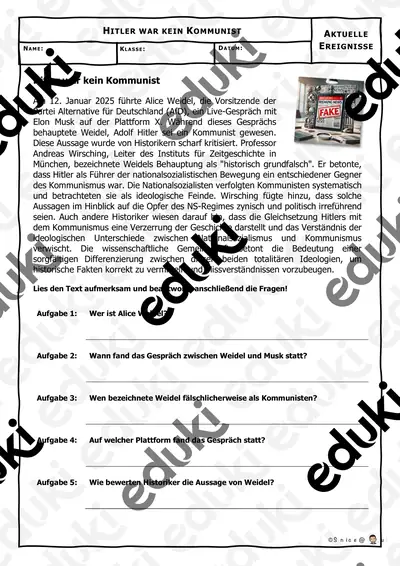
Hitler war kein Kommunist - Aktuelle Ereignisse #demokratiestärken

Materialpaket - Internationale Tage im Februar

02-17 Welttag der Resilienz im Tourismus

02-12 Internationaler Tag für die Verhütung von Gewaltextremismus

02-11 Internationaler Tag der Frauen und Mädchen in der Wissenschaft

01-26 Internationaler Tag der sauberen Energie

01-04 Welttag der Brailleschrift
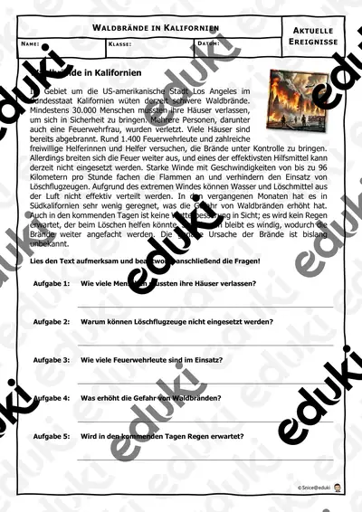
Waldbrände in Kalifornien - Aktuelle Ereignisse

Sprechstunde - Mobbing - Lass uns reden #demokratiestärken #demokratiestärken

Sprechstunde - Valentinstag - Lass uns reden
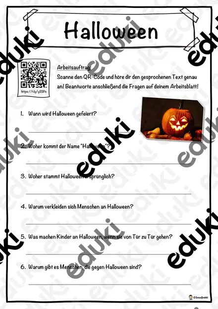
Halloween - Hörverstehen

Bewerbung Anschreiben - Bewerbung

Materialpaket Bewerbung Anschreiben, Deckblatt, Lebenslauf, Dritte Seite - Bewerbung - Praktikum
Keine Materialien gefunden – versuch einen anderen Suchbegriff oder Filter.